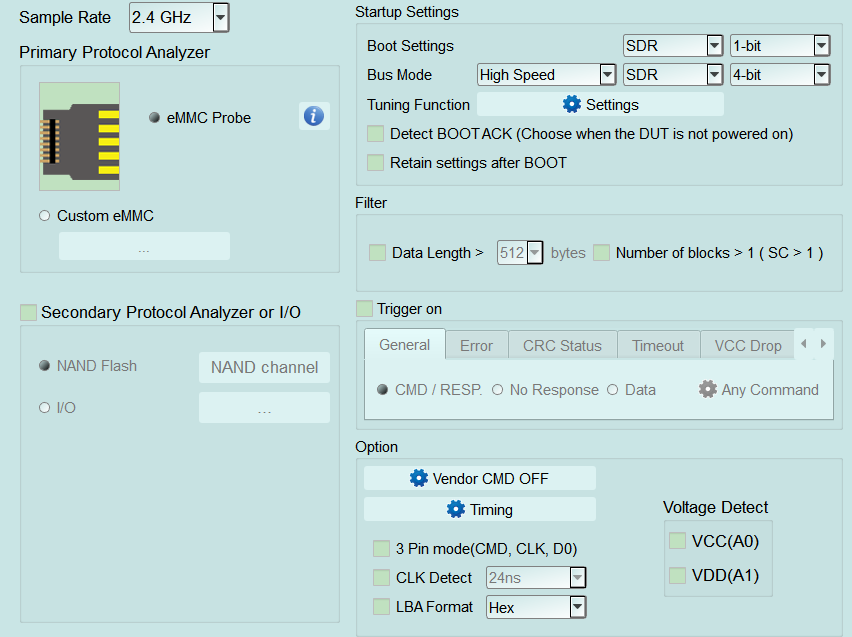
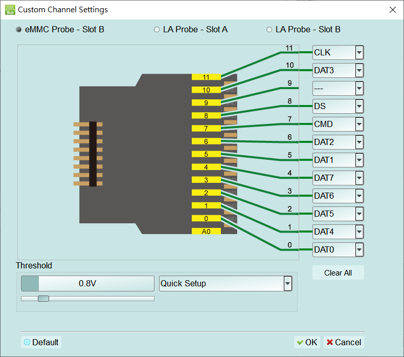
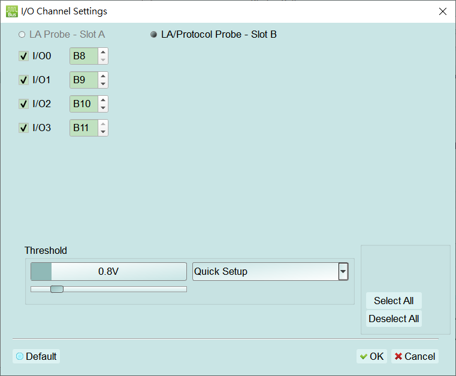
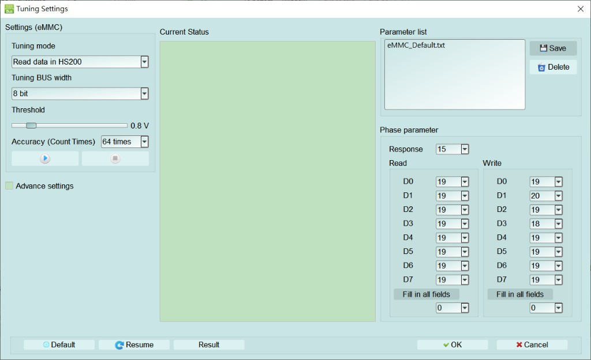
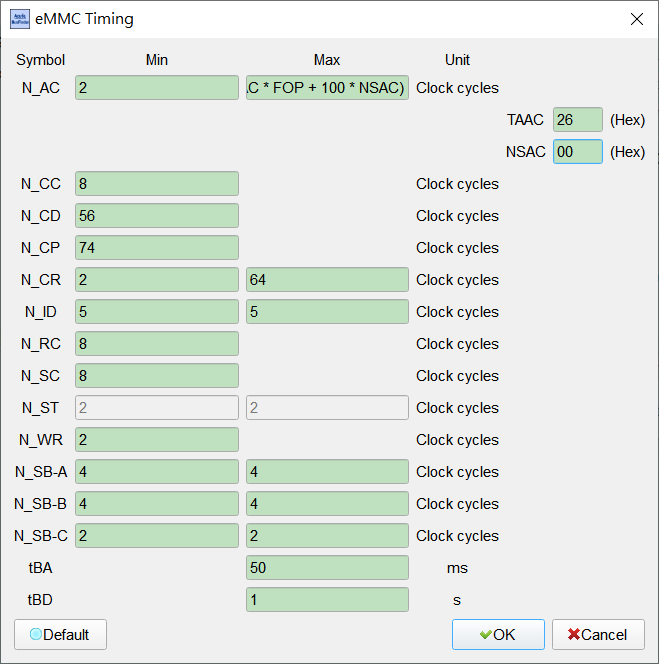

eMMC (Embedded MultiMediaCard)
eMMC 协议分析设置。
更多应用、连接与量测说明请见 Protocol Solution — eMMC。
Supported Models
BusFinder
BF6000 僅於 B 系列支援, BF7000 全系列都支援 此功能需要额外购买 option 的功能。
MSO2000/3000
| MSO2008E | MSO2116E | MSO2116B | MSO2216B | MSO2216B+ | MSO2416B+ |
|---|---|---|---|---|---|
| ● | ● | ● |
| MSO2216M+ | MSO2116E+ | MSO2116B+ |
|---|---|---|
| ● |
Settings

- 设定:
- Sample Rate: 选择采样率。若要开启 Secondary Protocol Analyzer(NAND Flash)，采样率须设为 1 GHz 以下。
- Primary Protocol Analyzer: 选择探棒类型(eMMC Probe)，或使用 Custom eMMC 自定义通道/接线。
- eMMC Probe: 点惊叹号图标开启 Custom Channel Settings，检视探棒脚位与 CLK、CMD、DAT0~DAT7、DS 等信号对应，并设定 Threshold。
- Custom eMMC: 开启 Custom Channel Settings 自定义接线。
- 信号来源: 选择 eMMC Probe - Slot B、LA Probe - Slot A 或 LA Probe - Slot B。
- 接脚对应: 将脚位对应至 CLK、CMD、DAT0~DAT7、DS 等信号。
- Threshold/Quick Setup: 设定触发准位，或使用快速设定。
- Clear All/Default: 清除通道对应，或还原默认。
- Secondary Protocol Analyzer or I/O: 以剩余脚位同时开启 NAND Flash 或 I/O 分析。选 I/O 时可开启 I/O Channel Settings。
- 探棒来源: 选择 LA Probe - Slot A 或 LA/Protocol Probe - Slot B。
- I/O0~I/O3: 勾选并指定对应通道(例如 B8~B11)。
- Threshold/Quick Setup: 设定触发准位，或使用快速设定。
- Select All/Deselect All/Default: 全选、全清或还原默认。
- Startup Settings: 设定撷取当下待测物运行模式，并提供 Tuning。
- Boot Settings: 开机阶段总线模式与位宽(例如 SDR、1-bit)。
- Bus Mode: 正常传输之速度/模式/位宽(例如 High Speed、SDR、4-bit)。
- Tuning Function: 开启 Tuning Settings 进行 eMMC 相位校正。
- Tuning mode: 选择校正模式(例如 Read data in HS200)。
- Tuning BUS width: 选择总线宽度(例如 8 bit)。
- Threshold: 设定校正电压门槛。
- Accuracy (Count Times): 设定量测次数(例如 64 times)。
- Advance settings: 开启进阶设定。
- Parameter list: 选择、Save 或 Delete 相位参数档。
- Phase parameter: 设定 Response，以及 Read/Write 的 D0~D7 相位；可使用 Fill in all fields 一次填入。
- Current Status/Resume/Result: 显示校正状态、继续校正或查看结果。
- Detect BOOTACK: 待测物尚未上电时可勾选以侦测 BOOTACK。
- Retain settings after BOOT: 开机后保留设定。
- Filter: 限制收录资料量以节省内存。
- Data Length >: 超过设定字节数的 Data Frame 后方资料不记录。
- Number of blocks > 1 (SC > 1): 过滤多区块传输相关资料。
- Option:
- Vendor CMD: 开启 Vendor CMD settings(说明见 Settings — Vendor CMD settings)。
- Timing: 开启 eMMC Timing(见下方弹出窗口说明)，依 Symbol 设定 Min/Max/Unit(Clock cycles 或时间)。
- Symbol/Min/Max/Unit: 设定每个 Symbol 的最小值、最大值与单位。Clock cycles 常见 Default: N_AC Min 2；N_CC/N_RC/N_SC Min 8；N_CD Min 56；N_CP Min 74；N_CR Min 2/Max 64；N_ID Min/Max 5；N_WR Min 2；N_SB-A/B Min/Max 4；N_SB-C Min/Max 2。N_ST Min/Max 常为 2 且栏位停用(Disable)。
- N_AC Max: 最大值可依 TAAC、FOP 与 NSAC 计算(画面公式)；TAAC/NSAC 以十六进位输入。Default 常见 TAAC 26h、NSAC 00h。
- tBA/tBD: 时间单位分别为 ms/s。Default 常见 tBA Max 50 ms、tBD Max 1 s。
- Default: 还原默认 Timing 值。
- 3 Pin mode (CMD, CLK, D0): 仅接 CLK/CMD/D0 时分析命令流程与状态。Default 为未勾选。
- CLK Detect: 侦测 CLK 是否有动作；勾选后时间条件栏位启用(Enable)。Default 为未勾选；时间常见 24 ns。
- LBA Format: 逻辑区块地址显示格式。Default 为 Hex。
- Voltage Detect: 勾选 VCC(A0)/VDD(A1) 作为电压侦测通道(通用说明见 Settings — Voltage Detect)。Default 为未勾选。
- 触发设定:
- Trigger on: 分页 General/Error/CRC Status/Timeout/VCC Drop。勾选后分页内容栏位启用(Enable)；CMD/RESP.、Data、Timeout、VCC/VDD Drop 等可开启对应弹出窗口(见 Settings 链接)。Default 为 Trigger on 与错误项未勾选。
- General:
- CMD / RESP.: 开启 Trigger Settings(说明见 Settings — Trigger Settings)。
- No Response: 在无回应时触发；齿轮开启命令条件(按钮常显示 No Resp.(Any CMD))。
- Data: 开启 Data Trigger(说明见 Settings — Data Trigger)。
- Error: CRC7 error/CRC16 error/End bit error。Default 为各项未勾选。
- CRC Status: 设定 CRC Status Pattern(Positive/Negative)。
- Timeout: 开启 Timeout Trigger(说明见 Settings — Timeout Trigger)。
- VCC Drop/VDD Drop: 电压下降触发；开启 Voltage Range Settings(说明见 Settings — Voltage Range Settings)。Default 为未勾选。
- General:
- Trigger on: 分页 General/Error/CRC Status/Timeout/VCC Drop。勾选后分页内容栏位启用(Enable)；CMD/RESP.、Data、Timeout、VCC/VDD Drop 等可开启对应弹出窗口(见 Settings 链接)。Default 为 Trigger on 与错误项未勾选。
在 Primary Protocol Analyzer 选 eMMC Probe 时点惊叹号，或选 Custom eMMC 时开启此窗口: 可选择信号来源(eMMC Probe - Slot B/LA Probe - Slot A/LA Probe - Slot B)、设定接脚与 CLK、CMD、DAT0~DAT7、DS 等对应，并设定 Threshold 或使用 Quick Setup；可用 Clear All 清除对应，或以 Default 还原默认。

在 Secondary Protocol Analyzer or I/O 选 I/O 时开启此窗口: 可选择探棒来源(LA Probe - Slot A/LA/Protocol Probe - Slot B)、勾选 I/O0~I/O3 并指定通道，并设定 Threshold 或使用 Quick Setup。

在 Startup Settings → Tuning Function 开启此窗口，可设定 Tuning mode、BUS width、Threshold、Accuracy，并调整 Response 与 Read/Write(D0~D7)相位；参数档可用 Save/Delete 管理，并以 Resume/Result 继续校正或查看结果。

在 Option → Timing 开启此窗口: 依 Symbol 设定 Min/Max/Unit(Clock cycles 或时间)。N_AC 的最大值可依 TAAC、FOP、NSAC 计算(Default 常见 TAAC 26h、NSAC 00h)；tBA/tBD Default 常见 Max 50 ms/1 s。N_ST 栏位可能停用(Disable)。可按 Default 还原默认值。
